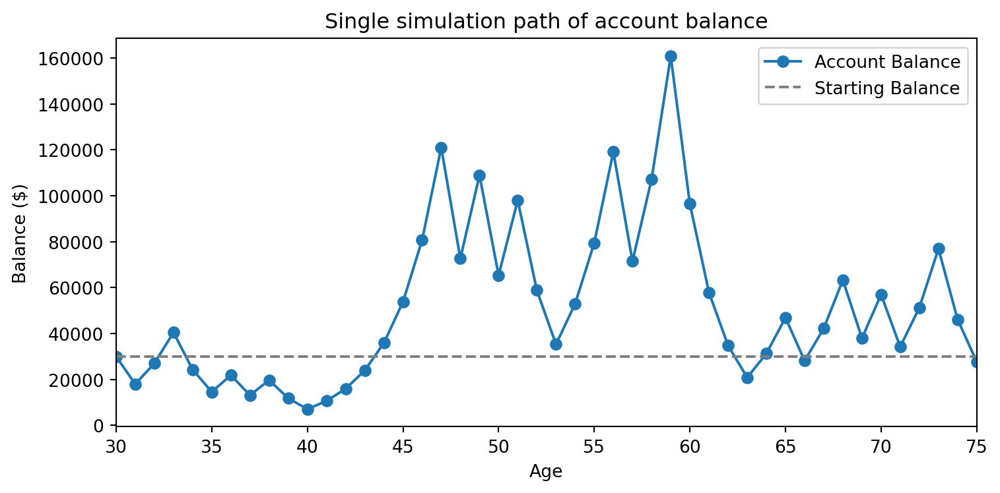
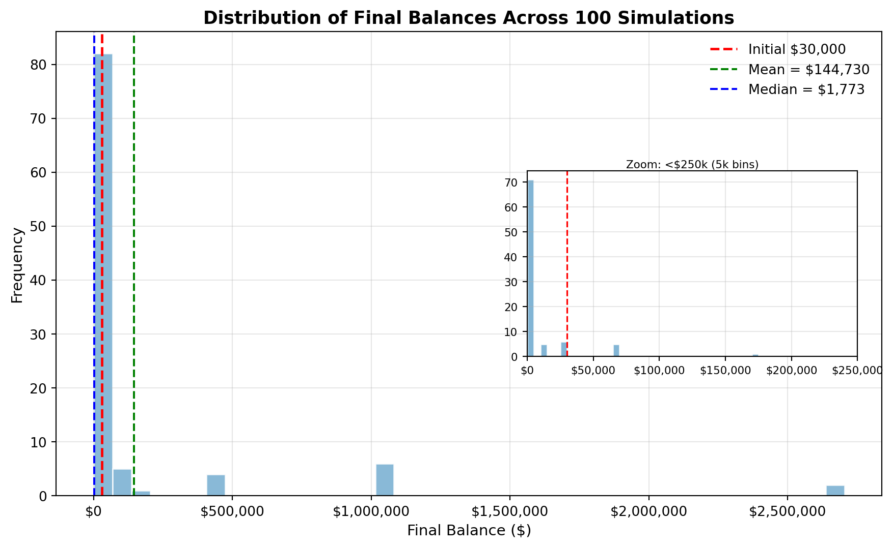
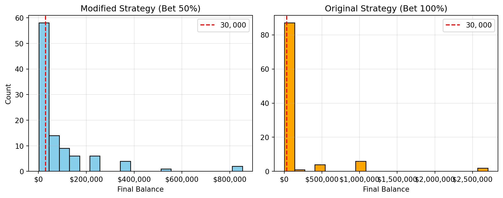
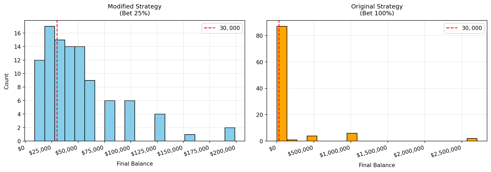

Simulation Challenge
Luke Bang
🎲 Simulation Challenge - The Kelly Criterion
NoneAssignment instructions
Important📋 What You Need To Do
Warning⚠️ AI Partnership Required
Use Cursor AI for speed, but ensure you understand and can explain the results in your own words. Verify cursor’s calculations as investment simulation is tricky.
The Investment Game
You have the opportunity to buy-in to this game next week with $30,000. Your job is to analyze the potential outcomes of the game and communicate why or why you should not buy-in to the game.
Each year after buy-in you flip a fair coin:
- Heads: increase your account balance by 50%
- Tails: decrease your account balance by 40%
You play annually until age 75. Your mission is to analyze outcomes and communicate insights clearly.
Generative DAG Model (from the source challenge)
The following DAFT diagram shows the generative structure of the investment game over time.
Abstract / Reflections
The goal of this writeup is to understand the parameters particular game and its optimal strategy, called the Kelly Criterion. This game is relevant to investment strategy.
The Kelly Criterion suggests that the optimal betting strategy (given that we are allowed to bet a portion \(f^*\) of our wealth at each round, not necessarily fixed for each round, but that doesn’t seem to matter…) is 25% for the game as described above. This mathematically follows from maximizing
\[ \mathbb{E}[\log(W_n)], \]
where \(W_n\) is the final wealth after \(n\) rounds of play.
And this bears out in the subsequent analysis, in terms of the probability that you end up with more money than you started. But also, as expected, while you mitigate risk, you lose out on mean wealth.
From my naive standpoint, it was surprising that maximizing the expectation of wealth \(\mathbb{E}[W_n]\) vs. the logarithm of wealth \(\mathbb{E}[\log(W_n)]\) yielded different strategies… I thought that since \(log(W_n)\) was monotonic, it would be little more than a regularization, in some sense. But what’s even more interesting is that we would want to maximize \(\log(W_n)\) as opposed just \(W_n\) in the first place. At first glance it’s sensible; the game is multiplicative (1.5× on win, 0.6× on loss) and logarithm “additionizes” multiplication. But my problem with this is that there’s no mathematical reason for why one should prefer this.
For instance, if you’re running this game over multiple parallel universes and you’re trying to maximize the sum wealth over all universes, it’s clear that \(\mathbb{E}[W_n]\) is the right thing to maximize. But we preside over one universe and one life — not multiple! Is maximizing \(\mathbb{E}[\log(W_n)]\) attuned to some set of assumptions here (perhaps related to generating wealth over a single lifespan) the same way that \(\mathbb{E}[W_n]\) attunes to maximizing wealth “over the multiverse of lifespans”?
1) Expected Value After 1 Flip
\[\begin{aligned} W_0 &= 30000 \\ E[W_1] &= 1.5 \times W_0 \times P(H) + 0.6 \times W_0 \times P(T) \\ &= 1.5 \times 30000 \times 0.5 + 0.6 \times 30000 \times 0.5 \\ &= 31500 \end{aligned}\]Expected Value after 1 flip: 31500.02) Single Simulation Over Time (Narrative + Plot)
Not so happy with the outcome. Surprisingly, even though the expected value at each step is expected to increase, the outcome after 35 years is actually lower than the initial investment.

3) 100 Simulations: Distribution of Final Balances

Mean final balance : $144,729.83
Median final balance : $1,772.59I would probably expect nearly a 100% change to have gained more than $30000. Each throw, I stand to gain 10% more than I lose, so roughly, I’d expect that unless I lose 55% * 35 = 19 years out of 35, I should be in the black.
4) Probability Balance > $30,000 at Age 75 (Original Game)
# TODO: Using the 100 simulations above, estimate P(final > 30000)
# - Print numeric result with 3 decimals
# Compute the probability that final_balance > $30,000 based on simulation results
print(f"P(final > $30,000) : {prob_gain:.2%}")P(final > $30,000) : 18.00%This means that I only win 18% of the time with this strategy, which is surprising.
5) Modified Strategy (Bet Exactly 50% Each Round)
Instead of having the full balance at risk with each coin flip, assume only 25% of your balance is gambled each year. Compare this to the original game. Which is riskier? Which has better upside?

Mean final balance (mod) : $86,611.71
Median final balance (mod) : $37,500.00
P(final > $30,000) (mod) : 56.00%
Original probability (betting all): 18.00%
Modified probability (betting 50%): 56.00%
Mean final balance (mod) : $51,518.97
Median final balance (mod) : $41,685.91
P(final > $30,000) (mod) : 71.00%
Original probability (betting all): 18.00%
Modified probability (betting 25%): 71.00%6) Briefly Explain Your Findings From The Previous Step in Light of A Concept Known as the “Kelly Criterion”
The generalized formula for the Kelly Criterion is this (per Wikipedia article on the Kelly Criterion https://en.wikipedia.org/wiki/Kelly_criterion#Investment_formula: ) \(f^* = \frac{p}{l} - \frac{q}{g}\)
where \(p\) and \(q\) are the probabilities of winning and losing, respectively, and \(l\) and \(g\) are the fractions gained/lost by losing or winning, respectively.
Plugging in the conditions of the game, we get: (keep in mind that )
\(f^* = \frac{0.5}{0.6} - \frac{0.5}{0.5} = 0.25\)
This means that the Kelly Criterion suggests betting 25% of your balance each year. This bears out in the fact that betting 25% outperformed betting both 100% and 50% of your balance each year.
There is however, one caveat: the mean is actually maximized by betting 100% of your balance each year.